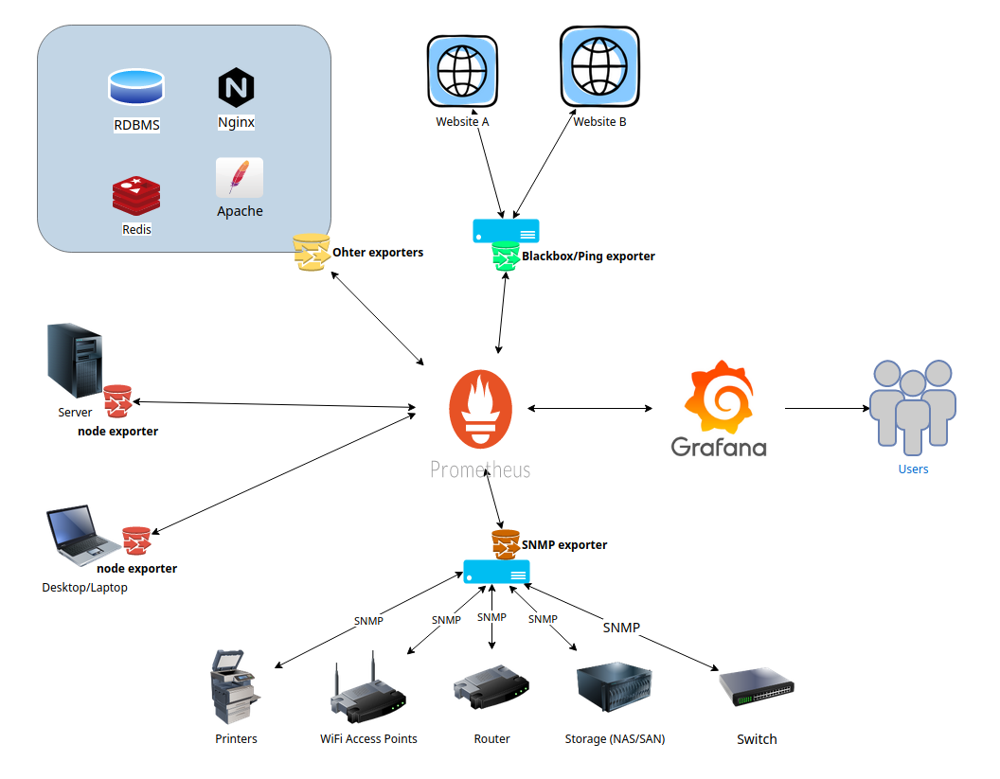

Home Network Monitoring using Prometheus
This blog post describes my setup for monitoring various devices on my home network suh as servers, laptops/desktops, networking gear etc. The setup and configuration is squarely geared towards small/medium sized network monitoring. A similar setup might work for large networks, but you will need to plan your compute/storage/bandwidth capacities accordingly. I’m running all the monitoring software on FreeBSD, but you can run it on your choice of OS. Just make sure to install the packages using your OS’s package manager.
TL;DR Version
This is super long post, as it involves installing and configuring multiple components. For the impatient, here are the high level steps.
- For instrumenting Linux/BSD boxes install and setup Node Exporter on each Linux/BSD box.
- For instrumenting SNMP-enabled devices install SNMP Exporter
- For instrumenting TCP/UDP/ICMP services install Blackbox Exporter
- For collecting all the metrics centrally install Prometheus
- For dashboards install Grafana
- Pay me $ 10 per device monitored (Just kidding!)
Architectural Components
For my needs I’ve decided to go with Prometheus and Grafana. I will discuss the reasons for doing in a separate post. Also, this post is not meant to be a general introduction for any of the hardware/software stacks used. For that please read up on the official documents of the respective hardware/software.
We start by looking at a conceptual architecture diagram of the various components involved.

The primary components shown in the diagram above are
- Prometheus for collecting and storing various metrics.
- Grafana for dashboarding.
- Various types of Prometheus exporters
- Node exporter installed on each FreeBSD/Linux box to be monitored.
- A single instance of Blackbox exporter to monitor various TCP/UDP services.
- A single instance of SNMP exporter to monitor devices over SNMP. (routers, switches, WiFi APs, Printers etc.)
Optional components include
- Prometheus Alert Manager for alerting when metrics trip certain thresholds.
- Unbound a recursive, caching DNS resolver for the home network.
- Caddy.io for reverse proxying Grafana.
- Other prometheus exporters to monitor services such as web servers (Apache, Nginx), RDBMS (MariaDB, Postgresql), NoSQL (Redis, MongoDB) etc.
NOTE:The exporters don’t push data to prometheus, rather the prometheus process scrapes data from a list of configured exporters. So you need to open up the respective network ports on your hosts running the exporters for the Promethus host to connect.
The Hardware/Software Stack
What is critical to understand is that you have the flexibility of running Prometheus, Grafana, and the Blackbox and SNMP exporters all on a single machine or each on its dedicated machine or some combination thereof. If you have decent virtualization stack, you can easily run them as VMs or better yet as FreeBSD jails. However, you do have to run the node_exporter on every server/workstation/desktop/laptop you need to monitor.
For my home network my hardware and software stack consists of the following pieces.
NMS Box
- Pine64 A64+-LTS 2GB running FreeBSD 13.0-RC4 ARM64. Software running on this box includes
- A single instance of Prometheus
- A single instance of Grafana
- A single instance of Caddy web server to reverse-proxy Grafana (Optional)
- A single instance of node_exporter for self monitoring (Optional)
I call this my Network Monitoring Server (NMS) box. The hardware is cheap, power efficient, and yet sufficiently powerful enough to run all of the above process. You don’t need to run a reverse-proxy and you certainly don’t need to self monitor, but I would highly recommend you do both.
Collector Box
- Pinte64 A64-Sopine 2GB running FreeBSD 13.0-RC4 ARM64. Software running on this box includes
- A single instance of node_exporter
- A single instance of Blackbox_exporter to monitor external websites.
- A single instance of SNMP exporter to monitor devices over SNMP. (routers, switches, WiFi APs, Printers etc.)
I call this my collector box. Again running on a ARM64 SBC is cheap, power efficient and convenient for my case.
Lastly I also have another Pine64 A64+ 1GB running Unbound as my local resolving and caching DNS server.
The Setup and Configuration
For ease of setup, I recommend that you get started with a bare minimum setup comprising of a Prometheus instance, a Grafana instance, and a few node exporters instances first. Get familiar with how metrics are collected in Prometheus and how they are charted in Grafana. Once you have a bit of familiarity then move on to Blackbox, SNMP and other exporters. These can be more challenging to set up, so having some familiarity with core Prometheus and Grafan will go a long way.
Node Exporter
Node exporter needs to be installed on every BSD/Linux box you want to monitor. There is also a Windows exporter to monitor Windows boxes.
For FreeBSD the setup is as follows
# Everything as root
# If using binary packages
pkg install node_exporter
# OR if using ports
cd /usr/ports/sysutils/node_exporter && make install
# Enable, start and verify service
service node_exporter enable
service node_exporter start
service node_exporter status
# Verify that node_exporter is running and ready to be scraped by Prometheus
fetch -o - 'https://127.0.0.1:9100/metrics'
By default node_exporter listens on all network interfaces on TCP port 9100. You can change that by adding node_exporter_listen_address=[<IP>]:<port> in /etc/rc.conf. Whichever port you choose, you’ll need to ensure that the server running prometheus can connect to each node_exporter instance over that port. This typically involves opening that port in your choice of firewall between the node exporters and prometheus.
Prometheus
For FreeBSD the setup for Prometheus is as follows
# Everything as root
# If using binary packages
pkg install prometheus
# OR if using ports
cd /usr/ports/net-mgmt/prometheus2 && make install
#Configure Prometheus (See sample config below)
vi /usr/local/etc/prometheus.yml
# Enable, start and verify service
service prometheus enable
service prometheus start
service prometheus status
By default Prometheus listens on TCP port 9090, so you may need to open that port on your firewall to able to talk directly to Prometheus. This is strictly optional as you’ll be interacting with Prometheus via Grafana dashboards, but it does come in handy for initial setup and verification.
Before starting Prometheus service, you do have to setup some basic configuration as shown below.
This is a bare minimum /usr/local/etc/prometheus.yml to get you started.
global:
# you can change these as depedning on how granular you want your metrics ,
# and how busy your network is.
scrape_interval: 60s # Scrape job runs every 1 min.
evaluation_interval: 60s # Evaluate rules every 1 min.
# scrape_timeout is set to the global default (10s).
# Alertmanager configuration
alerting:
alertmanagers:
- static_configs:
- targets:
# - alertmanager:9093
# Load rules once and periodically evaluate them according to the global 'evaluation_interval'.
rule_files:
# - "first_rules.yml"
# - "second_rules.yml"
scrape_configs:
- job_name: 'prometheus' # Prometheus Instances
static_configs:
- targets: ['localhost:9090'] # Local Prometheus
- job_name: 'node' # Node Exporter
static_configs:
- targets: [
'localhost:9100', # Self
'<server-A>:9100', # Some server running node_exporter on port 9100
'<desktop-A>:9100', # Some desktop running node_exporter on port 9100
]
We are setting up two scrape jobs
- A job named ‘prometheus’ for Prometheus to monitor itself. Yes, prometheus can monitor itself.
- A job named ‘node’ for prometheus to scrape all the ‘targets’ running node_exporter.
- The first target is the node_exporter instance running on the same host running Prometheus.
- After than you should add every host in your network that is running node_exporter.
- To monitor windows hosts consult the documentation of Windows exporter.
NOTE: The job name can be anything you like, but there are pre-built Grafana dashboards that you may find useful and which assume your jobs are named a certain name. So I suggest to keep the names prometheus and node for these two jobs respectively. We will also add jobs for Blackbox , and SNMP exporters later on. Also, for now we’re not setting up any evaluation rules or alerting using an alert manager.
To verify correct Prometheus setup, open up https://<prometheus-host>:9090/targets/ in your web browser and verify that all configured scrapping targets are in the ‘Up’ status.
Grafana
For FreeBSD the steps to setup and run Grafana and build some dashboards are given below.
# Everything as root
# If using binary packages
pkg install grafana
# OR if using ports
cd /usr/ports/www/grafana && make install
# Enable, start and verify service
service grafana enable
service grafana start
service grafana status
Allow incoming traffic to TCP port 3000 on the host running Grafana. In a web browser open up https://<grafana-host>:3000/ . Then ..
- Login using
admin/adminand change the admin password. - Add Prometheus data source to Grafana as described in the Grafana docs.
- Import the following pre-built dashboards from the Grafana Dashboards list using procedure described here.
- Prometheus 2.0 Overview for Prometheus metrics
- Prometheus Internal Stats for Prometheus metrics
- Node Exporter Quickstart for Linux
- Node exporter Full for Linux
- Node Exporter FreeBSD for FreeBSD
You can customize your instance by editing /usr/local/etc/grafana.conf, but I haven’t seen a need to edit this file for now.
At this point you should have a functional Prometheus+Grafana set up to monitor all the Linux/BSD boxes running node_exporter on your LAN.
WARNING: You may need to fix some of the charts in the pre-built dashboards manually. For that you will have to read up on how to work with charts in Grafana.
Blackbox Exporter
If you need to monitor a bunch of TCP/UDP/SNMP services, e.g. HTTP/HTTPS , DNS records, IMAP/SMTP servers etc. then you need to install and setup a Blackbox exporter. For FreeBSD the steps are as below.
On the box that is going to run your blackbox exporter process.
# Everything as root
# If using binary packages
pkg install blackbox_exporter
# OR if using ports
cd /usr/ports/net-mgmt/blackbox_exporter && make install
# Edit Configuration (See code sample config below)
vi /usr/local/etc/blackbox_exporter.yml
# Enable, start and verify service
service blackbox_exporter enable
service blackbox_exporter start
service blackbox_exporter status
By default blackbox_exporter listens on the loopback (lo) interface on TCP port 9115. You should change that to listen on an external or all interface by adding blackbox_exporter_listen_address=:9115 in /etc/rc.conf. Whichever port you choose, you’ll need to ensure that the server running prometheus can connect to the blackbox_exporter instance over that port. This typically involves allowing traffic to the Blackbox exporter port on firewall between the blackbox exporter and prometheus.
Before starting blackbox_exporter service, you do have to setup some basic configuration as shown below.
This is a bare minimum /usr/local/etc/blackbox_exporter.yml to get you started.
modules:
tcp_connect:
prober: tcp
tls_connect:
prober: tcp
timeout: 5s
tcp:
tls: true
ssh_banner:
prober: tcp
tcp:
query_response:
- expect: "^SSH-2.0-"
http_2xx:
prober: http
https_2xx:
prober: http
timeout: 5s
http:
valid_http_versions: ["HTTP/1.1", "HTTP/2.0"]
valid_status_codes: [] # Defaults to 2xx
method: GET
headers:
Accept-Language: en-US
no_follow_redirects: false
fail_if_ssl: false
fail_if_not_ssl: true
tls_config:
insecure_skip_verify: false
fail_if_header_not_matches:
- header: Strict-Transport-Security
regexp: "(max-age=.*)"
- header: X-Content-Type-Options
regexp: "nosniff"
- header: X-XSS-Protection
regexp : "1; mode=block"
- header: X-Frame-Options
regexp : "SAMEORIGIN"
Here we have setup http, https, tcp, tcp w/ tls, and ssh checks. There a quite a few modules you can set up as described in the official docs. You can also consult example config files here & here.
Once you have configured and started blackbox_exporter you can verify that it’s operating correctly by running
fetch -o - 'http://<blackbox-exporter-host>:9115/probe?module=http_2xx&target=www.freebsd.org'
The result of the above command should have ‘probe_success 1’ . This was a simple http_2xx probe for www.freebsd.org.
We are not done yet. Now we need to setup Prometheus to scrape the Blackbox exporter and also define some rules for certain conditions. On you Prometheus box edit /usr/local/etc/prometheus.yml file and the following.
rule_files:
- "/usr/local/etc/ssl_expiry_rules.yaml"
scrape_configs:
- job_name: 'blackbox' # Blackbox
metrics_path: /probe
params:
module: [https_2xx] # Look for a HTTP 200 response.
static_configs:
- targets:
- www.freebsd.org
relabel_configs:
- source_labels: [__address__]
target_label: __param_target
- source_labels: [__param_target]
target_label: instance
- target_label: __address__
replacement: <blackbox_exporter-host>:9115 # The blackbox exporter's real hostname:port.
Here we have setup https (module https_2xx) probing of www.freebsd.org (target). The last line specifies the hostname and port of the box running blackbox exporter.
The /usr/local/etc/ssl_expiry_rules.yaml contains a rule to check for expiration of SSL certificates of the HTTPS sites you are monitoring.
groups:
- name: ssl_expiry.rules
rules:
- alert: SSLCertExpiringSoon
expr: probe_ssl_earliest_cert_expiry{job="blackbox"} - time() < 86400 * 30
for: 10m
Lastly, you need to import the pre-built Blackbox Exporter dashboard in your Grafana instance.
NOTE: Here I have shown example of probing only one module - https_2xx. You will need to setup probing of other modules supported by the blackbox exporter as per your needs (DNS, SMTP, IMAP etc.). For each module you need to set a new scrape job and specify the targets accordingly.
SNMP Exporter
The SNMP exporter is the most tricky of all the components so far to install. Be prepared for things to not work as expected initially. Also, you need to be familiar with basics of networking and SNMP monitoring to a certain degree.
For FreeBSD the steps to setup the SNMP exporter are
# Everything as root
# If using binary packages
pkg install snmp_exporter
# OR if using ports
cd /usr/ports/sysutils/snmp_exporter && make install
# Edit Configuration (See code sample config below)
mkdir -p /usr/local/etc/snmp_exporter
cd /usr/local/etc/snmp_exporter
fetch https://github.com/prometheus/snmp_exporter/raw/main/snmp.yml
fetch https://raw.githubusercontent.com/prometheus/snmp_exporter/main/generator/generator.yml
# Enable, start and verify service
service snmp_exporter enable
service snmp_exporter start
service snmp_exporter status
SNMP exporter listens on TCP port 9116 by default. The default snmp.yml should get you started for most types of SNMP devices. However I had some trouble starting the exporter using that file. The alternative is to generate your custom snmp.yml file using the generator.yml + MIB files for your needs. The procedure is a bit daunting first, and is described here. It may take you a couple of attempts to get your snmp.yml setup just right.
Also worth mentioning that the community (v1), username/password (v2), encryption password (v3) need to be specified in your snmp.yml. They cannot be supplied as parameters from your prometheus.yml file.
Here is sample bare minimum snmp.yml file to pull network interface metrics.
if_mib:
walk:
- 1.3.6.1.2.1.2
- 1.3.6.1.2.1.31.1.1
get:
- 1.3.6.1.2.1.1.3.0
metrics:
- name: sysUpTime
oid: 1.3.6.1.2.1.1.3
type: gauge
help: The time (in hundredths of a second) since the network management portion
of the system was last re-initialized. - 1.3.6.1.2.1.1.3
# Many more metrics here. See the downloaded snmp.yml file fo the full section.
version: 2
max_repetitions: 25
retries: 3
timeout: 5s
auth:
community: public
Here I’ve setup if_mib as the block to pull SNMP details from network interfaces of a device which supports SNMP version 2 using community ‘public’. If all your SNMP gear run the same SNMP version and use the same authentication then you can use the same block to probe all of them. Otherwise you will need different blocks for each type specifying correct version and authentication parameters. e.g. In my case, I have if_mib_router for my router, if_mib_ap for my WiFi access points, if_mib_printer for my network printer, if_mib_synology for my Synology NAS each with respective version and authentication details.
To verify SNMP exporter is setup and working correctly…
fetch -o - 'http://127.0.0.1:9116/snmp?module=if_mib&target=<snmp-enabled-device>'
Lastly, only SNMP v3 using AuthPriv supports proper authentication and encryption. Anything else is open for network sniffing. So please enable SNMP v2/v1 only in networks you trust. Or better yet find a more secure way to instrument your devices.
We are not done yet. Now we need to setup Prometheus to scrape the SNMP exporter. On you Prometheus box edit /usr/local/etc/prometheus.yml file and the following.
scrape_configs:
- job_name: 'snmp_exporter' # This is to instrument the SNMP Exporter itself
static_configs:
- targets: ['<snmp-exporter host>:9116']
- job_name: 'snmp' # Query devices over SNMP
static_configs:
- targets: [
<SNMP Device1>,
<SNMP Device 2>
]
metrics_path: /snmp
params:
module: [if_mib]
relabel_configs:
- source_labels: [__address__]
target_label: __param_target
- source_labels: [__param_target]
target_label: instance
- target_label: __address__
replacement: '<snmp-exporter host>:9116' #Hostname/IP of the snmp_exporter
The first job snmp_exporter pull metrics about the exporter itself including how much time it took, whether there were any errors etc.
In the second job snmp we have setup network interface (module if_mib) probing of a couple of SNMP-enabled devices (targets). The last line specifies the hostname and port of the box running blackbox exporter.
Lastly, you need to import some of the following pre-built SNMP dashboard in your Grafana instance.
Other Exporters and Dashboards
Here are some more exporters and dashboards you may find useful
- FreeBSD kernel exporter + FreeBSD ZFS Stats Dashboard
- FreeBSD gstats exporter + Dashboard
- Dashboards for OpnSense / pfSense
- Unbound DNS resolver exporter + Dashboard
- Many SNMP Dashboards
Tour of My Dashboards
Finally here is a small tour of my own setup to monitor my home network.
Final Thoughts
It took me a grand total of 8 to 10 hours spread over two weekends to set this whole thing up. Most of that time was spent in reading the configuration guides for the various components. Also the SNMP exporter portion took the most of my time due to the complicated steps involved.
Overall though I am very pleased with this setup. For starters I have found some use for my Pine64 SBCs which were lying idle until now. Secondly, I think the setup if flexible enough to be able to track even more different types of time-series data like metrics from IoT devices/sensors for weather, energy/water consumption. The possibilities are endless.
If you have read this whole post end to end, then congratulations and a tip of the hat for your patience. I hope you’ve found this post helpful to get started in home network monitoring.